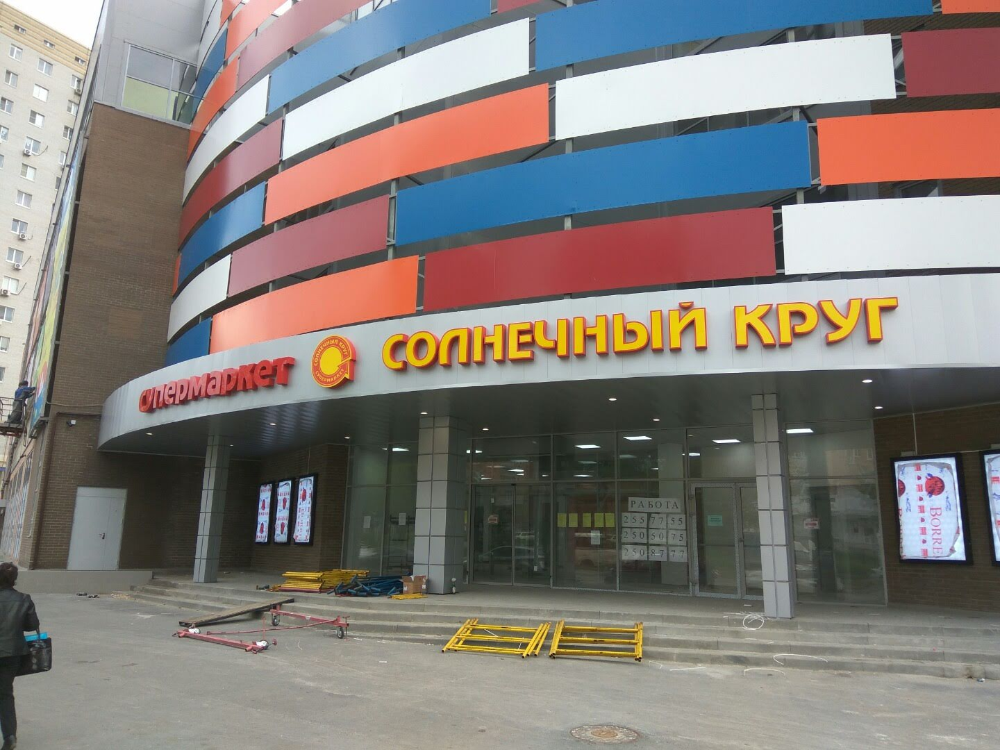
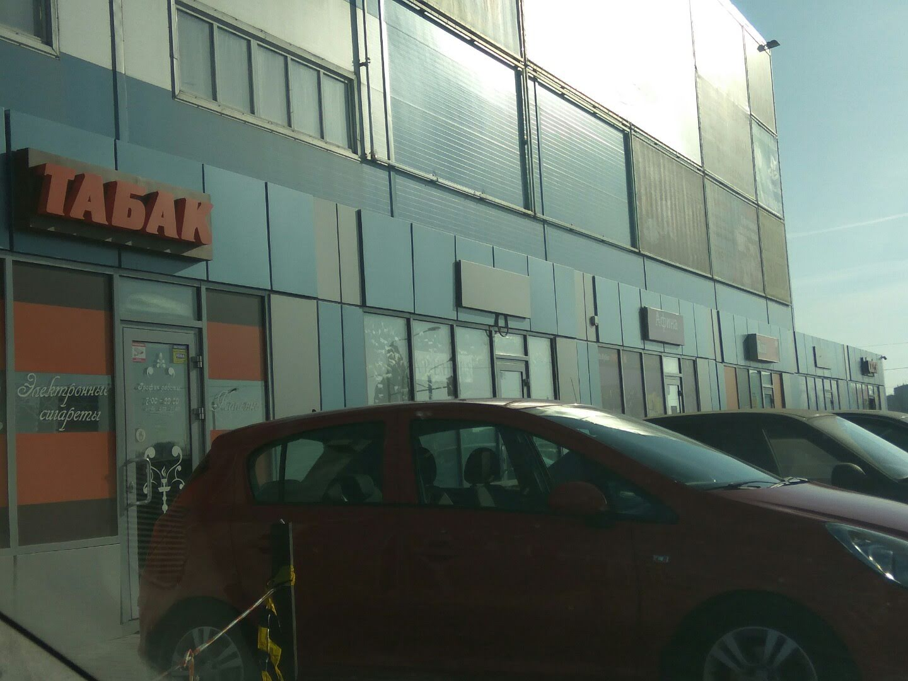
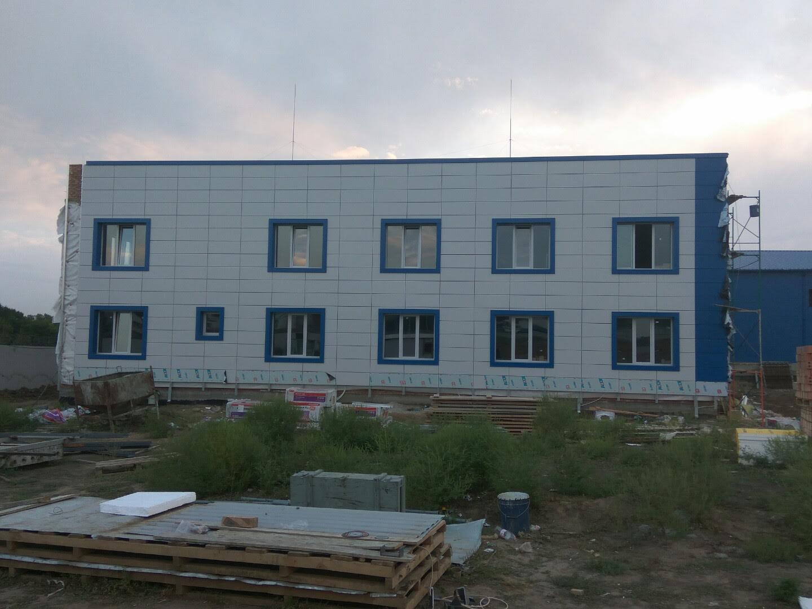
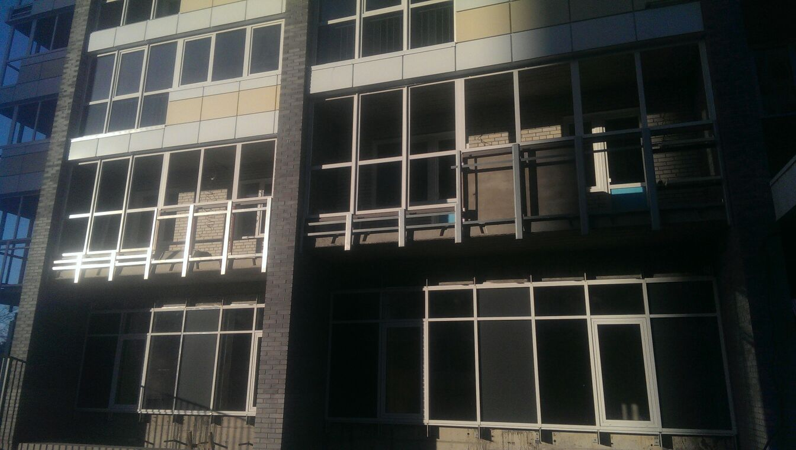
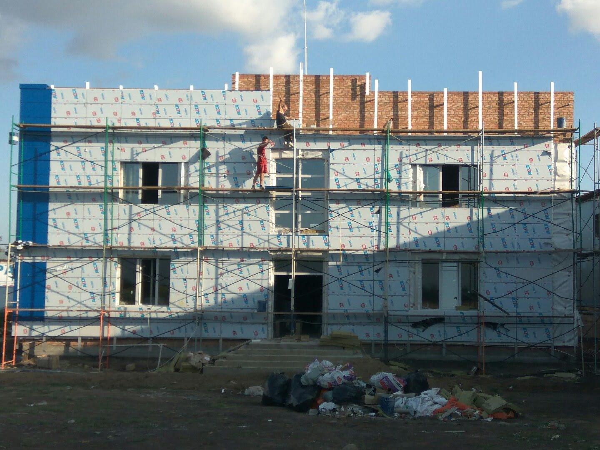

Professional portfolio / selected work
Built with
precision.
Architectural cladding, aluminum composite material (ACM), commercial storefronts and installation details. A selection from my project archive.

Architectural facades


Commercial storefronts


Installation & design



